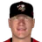
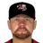
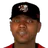
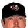
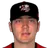
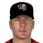

Franchise record book · ABL
Las Vegas Gamblers
Seasons covered: 2002–2002. Only games played for this franchise count.
This club has no pre-2002 history in the export, so its record book is the 2002 season to date. Rate records need 3.1 PA or 1 inning per team game.
Home runs
| # | Player | Season | Team | Home runs |
|---|---|---|---|---|
| #1 | 2002 (ABL) |  Las Vegas Gamblers Las Vegas Gamblers | 11 | |
| #2 | 2002 (ABL) | Las Vegas Gamblers | 7 | |
| #3 | 2002 (ABL) | Las Vegas Gamblers | 5 | |
| #4 | 2002 (ABL) | Las Vegas Gamblers | 4 | |
| #5 | 2002 (ABL) | Las Vegas Gamblers | 3 | |
| #6 |  Jeff Conine • | 2002 (ABL) | Las Vegas Gamblers | 3 |
| #7 | 2002 (ABL) | Las Vegas Gamblers | 3 | |
| #8 | 2002 (ABL) | Las Vegas Gamblers | 2 | |
| #9 |  Mandy Romero • | 2002 (ABL) | Las Vegas Gamblers | 2 |
| #10 | 2002 (ABL) | Las Vegas Gamblers | 1 |
Hits
| # | Player | Season | Team | Hits |
|---|---|---|---|---|
| #1 | 2002 (ABL) | Las Vegas Gamblers | 54 | |
| #2 | 2002 (ABL) | Las Vegas Gamblers | 52 | |
| #3 | Jeff Conine • | 2002 (ABL) | Las Vegas Gamblers | 50 |
| #4 | 2002 (ABL) | Las Vegas Gamblers | 49 | |
| #5 | 2002 (ABL) | Las Vegas Gamblers | 48 | |
| #6 | 2002 (ABL) | Las Vegas Gamblers | 43 | |
| #7 |  Desi Relaford • | 2002 (ABL) | Las Vegas Gamblers | 40 |
| #8 | 2002 (ABL) | Las Vegas Gamblers | 37 | |
| #9 | 2002 (ABL) | Las Vegas Gamblers | 35 | |
| #10 | Mandy Romero • | 2002 (ABL) | Las Vegas Gamblers | 16 |
RBI
| # | Player | Season | Team | RBI |
|---|---|---|---|---|
| #1 | 2002 (ABL) | Las Vegas Gamblers | 33 | |
| #2 | 2002 (ABL) | Las Vegas Gamblers | 28 | |
| #3 | Desi Relaford • | 2002 (ABL) | Las Vegas Gamblers | 25 |
| #4 | 2002 (ABL) | Las Vegas Gamblers | 22 | |
| #5 | 2002 (ABL) | Las Vegas Gamblers | 21 | |
| #6 | Jeff Conine • | 2002 (ABL) | Las Vegas Gamblers | 19 |
| #7 | 2002 (ABL) | Las Vegas Gamblers | 17 | |
| #8 | 2002 (ABL) | Las Vegas Gamblers | 17 | |
| #9 | 2002 (ABL) | Las Vegas Gamblers | 13 | |
| #10 | Mandy Romero • | 2002 (ABL) | Las Vegas Gamblers | 11 |
Runs
| # | Player | Season | Team | Runs |
|---|---|---|---|---|
| #1 | 2002 (ABL) | Las Vegas Gamblers | 32 | |
| #2 | 2002 (ABL) | Las Vegas Gamblers | 30 | |
| #3 | 2002 (ABL) | Las Vegas Gamblers | 29 | |
| #4 | 2002 (ABL) | Las Vegas Gamblers | 27 | |
| #5 | Jeff Conine • | 2002 (ABL) | Las Vegas Gamblers | 24 |
| #6 | 2002 (ABL) | Las Vegas Gamblers | 23 | |
| #7 | 2002 (ABL) | Las Vegas Gamblers | 17 | |
| #8 | Desi Relaford • | 2002 (ABL) | Las Vegas Gamblers | 16 |
| #9 | 2002 (ABL) | Las Vegas Gamblers | 11 | |
| #10 | Derek Henderson • | 2002 (ABL) | Las Vegas Gamblers | 5 |
Stolen bases
| # | Player | Season | Team | Stolen bases |
|---|---|---|---|---|
| #1 | 2002 (ABL) | Las Vegas Gamblers | 14 | |
| #2 | 2002 (ABL) | Las Vegas Gamblers | 7 | |
| #3 | Desi Relaford • | 2002 (ABL) | Las Vegas Gamblers | 7 |
| #4 | 2002 (ABL) | Las Vegas Gamblers | 5 | |
| #5 | 2002 (ABL) | Las Vegas Gamblers | 5 | |
| #6 | 2002 (ABL) | Las Vegas Gamblers | 3 | |
| #7 | Jeff Conine • | 2002 (ABL) | Las Vegas Gamblers | 2 |
| #8 | 2002 (ABL) | Las Vegas Gamblers | 1 | |
| #9 | 2002 (ABL) | Las Vegas Gamblers | 1 | |
| #10 | 2002 (ABL) | Las Vegas Gamblers | 0 |
Doubles
| # | Player | Season | Team | Doubles |
|---|---|---|---|---|
| #1 | 2002 (ABL) | Las Vegas Gamblers | 15 | |
| #2 | Desi Relaford • | 2002 (ABL) | Las Vegas Gamblers | 14 |
| #3 | Jeff Conine • | 2002 (ABL) | Las Vegas Gamblers | 12 |
| #4 | 2002 (ABL) | Las Vegas Gamblers | 11 | |
| #5 | 2002 (ABL) | Las Vegas Gamblers | 9 | |
| #6 | 2002 (ABL) | Las Vegas Gamblers | 7 | |
| #7 | 2002 (ABL) | Las Vegas Gamblers | 5 | |
| #8 | 2002 (ABL) | Las Vegas Gamblers | 5 | |
| #9 | 2002 (ABL) | Las Vegas Gamblers | 5 | |
| #10 | Derek Henderson • | 2002 (ABL) | Las Vegas Gamblers | 3 |
Triples
| # | Player | Season | Team | Triples |
|---|---|---|---|---|
| #1 | 2002 (ABL) | Las Vegas Gamblers | 2 | |
| #2 | 2002 (ABL) | Las Vegas Gamblers | 1 | |
| #3 | 2002 (ABL) | Las Vegas Gamblers | 1 | |
| #4 | 2002 (ABL) | Las Vegas Gamblers | 1 | |
| #5 | Mandy Romero • | 2002 (ABL) | Las Vegas Gamblers | 1 |
| #6 | Jeff Conine • | 2002 (ABL) | Las Vegas Gamblers | 1 |
| #7 | 2002 (ABL) | Las Vegas Gamblers | 1 | |
| #8 | 2002 (ABL) | Las Vegas Gamblers | 0 | |
| #9 | 2002 (ABL) | Las Vegas Gamblers | 0 | |
| #10 | 2002 (ABL) | Las Vegas Gamblers | 0 |
Walks
| # | Player | Season | Team | Walks |
|---|---|---|---|---|
| #1 | 2002 (ABL) | Las Vegas Gamblers | 19 | |
| #2 | 2002 (ABL) | Las Vegas Gamblers | 19 | |
| #3 | Jeff Conine • | 2002 (ABL) | Las Vegas Gamblers | 16 |
| #4 | 2002 (ABL) | Las Vegas Gamblers | 14 | |
| #5 | 2002 (ABL) | Las Vegas Gamblers | 14 | |
| #6 | 2002 (ABL) | Las Vegas Gamblers | 12 | |
| #7 | 2002 (ABL) | Las Vegas Gamblers | 11 | |
| #8 | Desi Relaford • | 2002 (ABL) | Las Vegas Gamblers | 11 |
| #9 | 2002 (ABL) | Las Vegas Gamblers | 8 | |
| #10 | 2002 (ABL) | Las Vegas Gamblers | 8 |
Total bases
| # | Player | Season | Team | Total bases |
|---|---|---|---|---|
| #1 | 2002 (ABL) | Las Vegas Gamblers | 93 | |
| #2 | 2002 (ABL) | Las Vegas Gamblers | 84 | |
| #3 | 2002 (ABL) | Las Vegas Gamblers | 75 | |
| #4 | Jeff Conine • | 2002 (ABL) | Las Vegas Gamblers | 73 |
| #5 | 2002 (ABL) | Las Vegas Gamblers | 67 | |
| #6 | 2002 (ABL) | Las Vegas Gamblers | 64 | |
| #7 | Desi Relaford • | 2002 (ABL) | Las Vegas Gamblers | 57 |
| #8 | 2002 (ABL) | Las Vegas Gamblers | 56 | |
| #9 | 2002 (ABL) | Las Vegas Gamblers | 53 | |
| #10 | Mandy Romero • | 2002 (ABL) | Las Vegas Gamblers | 26 |
Batting average qualified
| # | Player | Season | Team | Batting average |
|---|---|---|---|---|
| #1 | 2002 (ABL) | Las Vegas Gamblers | .394 | |
| #2 | Desi Relaford • | 2002 (ABL) | Las Vegas Gamblers | .364 |
| #3 | 2002 (ABL) | Las Vegas Gamblers | .342 | |
| #4 | 2002 (ABL) | Las Vegas Gamblers | .308 | |
| #5 | 2002 (ABL) | Las Vegas Gamblers | .306 | |
| #6 | 2002 (ABL) | Las Vegas Gamblers | .287 | |
| #7 | Jeff Conine • | 2002 (ABL) | Las Vegas Gamblers | .276 |
| #8 | 2002 (ABL) | Las Vegas Gamblers | .269 | |
| #9 | 2002 (ABL) | Las Vegas Gamblers | .262 |
On-base % qualified
| # | Player | Season | Team | On-base % |
|---|---|---|---|---|
| #1 | 2002 (ABL) | Las Vegas Gamblers | .456 | |
| #2 | Desi Relaford • | 2002 (ABL) | Las Vegas Gamblers | .421 |
| #3 | 2002 (ABL) | Las Vegas Gamblers | .392 | |
| #4 | 2002 (ABL) | Las Vegas Gamblers | .390 | |
| #5 | 2002 (ABL) | Las Vegas Gamblers | .376 | |
| #6 | 2002 (ABL) | Las Vegas Gamblers | .367 | |
| #7 | 2002 (ABL) | Las Vegas Gamblers | .333 | |
| #8 | Jeff Conine • | 2002 (ABL) | Las Vegas Gamblers | .332 |
| #9 | 2002 (ABL) | Las Vegas Gamblers | .312 |
Slugging % qualified
| # | Player | Season | Team | Slugging % |
|---|---|---|---|---|
| #1 | 2002 (ABL) | Las Vegas Gamblers | .585 | |
| #2 | 2002 (ABL) | Las Vegas Gamblers | .532 | |
| #3 | Desi Relaford • | 2002 (ABL) | Las Vegas Gamblers | .518 |
| #4 | 2002 (ABL) | Las Vegas Gamblers | .508 | |
| #5 | 2002 (ABL) | Las Vegas Gamblers | .500 | |
| #6 | 2002 (ABL) | Las Vegas Gamblers | .408 | |
| #7 | 2002 (ABL) | Las Vegas Gamblers | .408 | |
| #8 | Jeff Conine • | 2002 (ABL) | Las Vegas Gamblers | .403 |
| #9 | 2002 (ABL) | Las Vegas Gamblers | .397 |
OPS qualified
| # | Player | Season | Team | OPS |
|---|---|---|---|---|
| #1 | 2002 (ABL) | Las Vegas Gamblers | .975 | |
| #2 | 2002 (ABL) | Las Vegas Gamblers | .964 | |
| #3 | Desi Relaford • | 2002 (ABL) | Las Vegas Gamblers | .939 |
| #4 | 2002 (ABL) | Las Vegas Gamblers | .923 | |
| #5 | 2002 (ABL) | Las Vegas Gamblers | .876 | |
| #6 | 2002 (ABL) | Las Vegas Gamblers | .775 | |
| #7 | Jeff Conine • | 2002 (ABL) | Las Vegas Gamblers | .735 |
| #8 | 2002 (ABL) | Las Vegas Gamblers | .730 | |
| #9 | 2002 (ABL) | Las Vegas Gamblers | .720 |
WAR (OOTP)
| # | Player | Season | Team | WAR (OOTP) |
|---|---|---|---|---|
| #1 | 2002 (ABL) | Las Vegas Gamblers | 1.6 | |
| #2 | 2002 (ABL) | Las Vegas Gamblers | 1.1 | |
| #3 | Desi Relaford • | 2002 (ABL) | Las Vegas Gamblers | 0.9 |
| #4 | 2002 (ABL) | Las Vegas Gamblers | 0.7 | |
| #5 | 2002 (ABL) | Las Vegas Gamblers | 0.6 | |
| #6 | 2002 (ABL) | Las Vegas Gamblers | 0.5 | |
| #7 | 2002 (ABL) | Las Vegas Gamblers | 0.3 | |
| #8 | 2002 (ABL) | Las Vegas Gamblers | 0.2 | |
| #9 | 2002 (ABL) | Las Vegas Gamblers | 0.1 | |
| #10 | 2002 (ABL) | Las Vegas Gamblers | 0.0 |
Wins
| # | Player | Season | Team | Wins |
|---|---|---|---|---|
| #1 | Brandon Duckworth • | 2002 (ABL) | Las Vegas Gamblers | 5 |
| #2 | Jose Jimenez • | 2002 (ABL) | Las Vegas Gamblers | 4 |
| #3 | 2002 (ABL) | Las Vegas Gamblers | 3 | |
| #4 | 2002 (ABL) | Las Vegas Gamblers | 3 | |
| #5 |  Jason Davis • | 2002 (ABL) | Las Vegas Gamblers | 2 |
| #6 |  Bud Smith • | 2002 (ABL) | Las Vegas Gamblers | 2 |
| #7 | 2002 (ABL) | Las Vegas Gamblers | 1 | |
| #8 | 2002 (ABL) | Las Vegas Gamblers | 1 | |
| #9 |  Kevin Brown • | 2002 (ABL) | Las Vegas Gamblers | 0 |
| #10 | Matt Perisho • | 2002 (ABL) | Las Vegas Gamblers | 0 |
Strikeouts
| # | Player | Season | Team | Strikeouts |
|---|---|---|---|---|
| #1 | Kevin Brown • | 2002 (ABL) | Las Vegas Gamblers | 68 |
| #2 | Brandon Duckworth • | 2002 (ABL) | Las Vegas Gamblers | 53 |
| #3 | 2002 (ABL) | Las Vegas Gamblers | 30 | |
| #4 | 2002 (ABL) | Las Vegas Gamblers | 29 | |
| #5 | 2002 (ABL) | Las Vegas Gamblers | 28 | |
| #6 | Bud Smith • | 2002 (ABL) | Las Vegas Gamblers | 22 |
| #7 | 2002 (ABL) | Las Vegas Gamblers | 16 | |
| #8 | 2002 (ABL) | Las Vegas Gamblers | 15 | |
| #9 | Jose Jimenez • | 2002 (ABL) | Las Vegas Gamblers | 13 |
| #10 | 2002 (ABL) | Las Vegas Gamblers | 12 |
Saves
| # | Player | Season | Team | Saves |
|---|---|---|---|---|
| #1 | 2002 (ABL) | Las Vegas Gamblers | 7 | |
| #2 | Jose Jimenez • | 2002 (ABL) | Las Vegas Gamblers | 3 |
| #3 | 2002 (ABL) | Las Vegas Gamblers | 1 | |
| #4 | 2002 (ABL) | Las Vegas Gamblers | 0 | |
| #5 | Brandon Duckworth • | 2002 (ABL) | Las Vegas Gamblers | 0 |
| #6 | Kevin Brown • | 2002 (ABL) | Las Vegas Gamblers | 0 |
| #7 | Matt Perisho • | 2002 (ABL) | Las Vegas Gamblers | 0 |
| #8 | Jason Davis • | 2002 (ABL) | Las Vegas Gamblers | 0 |
| #9 | 2002 (ABL) | Las Vegas Gamblers | 0 | |
| #10 | Bud Smith • | 2002 (ABL) | Las Vegas Gamblers | 0 |
Innings
| # | Player | Season | Team | Innings |
|---|---|---|---|---|
| #1 | Kevin Brown • | 2002 (ABL) | Las Vegas Gamblers | 59.2 |
| #2 | Brandon Duckworth • | 2002 (ABL) | Las Vegas Gamblers | 51.0 |
| #3 | Bud Smith • | 2002 (ABL) | Las Vegas Gamblers | 41.0 |
| #4 | 2002 (ABL) | Las Vegas Gamblers | 37.0 | |
| #5 | 2002 (ABL) | Las Vegas Gamblers | 36.2 | |
| #6 | 2002 (ABL) | Las Vegas Gamblers | 28.0 | |
| #7 | 2002 (ABL) | Las Vegas Gamblers | 26.0 | |
| #8 | Jason Davis • | 2002 (ABL) | Las Vegas Gamblers | 22.2 |
| #9 | Jose Jimenez • | 2002 (ABL) | Las Vegas Gamblers | 16.1 |
| #10 | 2002 (ABL) | Las Vegas Gamblers | 15.1 |
Complete games
| # | Player | Season | Team | Complete games |
|---|---|---|---|---|
| #1 | 2002 (ABL) | Las Vegas Gamblers | 0 | |
| #2 | Brandon Duckworth • | 2002 (ABL) | Las Vegas Gamblers | 0 |
| #3 | Kevin Brown • | 2002 (ABL) | Las Vegas Gamblers | 0 |
| #4 | Matt Perisho • | 2002 (ABL) | Las Vegas Gamblers | 0 |
| #5 | 2002 (ABL) | Las Vegas Gamblers | 0 | |
| #6 | 2002 (ABL) | Las Vegas Gamblers | 0 | |
| #7 | Jason Davis • | 2002 (ABL) | Las Vegas Gamblers | 0 |
| #8 | 2002 (ABL) | Las Vegas Gamblers | 0 | |
| #9 | Bud Smith • | 2002 (ABL) | Las Vegas Gamblers | 0 |
| #10 | 2002 (ABL) | Las Vegas Gamblers | 0 |
Shutouts
| # | Player | Season | Team | Shutouts |
|---|---|---|---|---|
| #1 | 2002 (ABL) | Las Vegas Gamblers | 0 | |
| #2 | Brandon Duckworth • | 2002 (ABL) | Las Vegas Gamblers | 0 |
| #3 | Kevin Brown • | 2002 (ABL) | Las Vegas Gamblers | 0 |
| #4 | Matt Perisho • | 2002 (ABL) | Las Vegas Gamblers | 0 |
| #5 | 2002 (ABL) | Las Vegas Gamblers | 0 | |
| #6 | 2002 (ABL) | Las Vegas Gamblers | 0 | |
| #7 | Jason Davis • | 2002 (ABL) | Las Vegas Gamblers | 0 |
| #8 | 2002 (ABL) | Las Vegas Gamblers | 0 | |
| #9 | Bud Smith • | 2002 (ABL) | Las Vegas Gamblers | 0 |
| #10 | 2002 (ABL) | Las Vegas Gamblers | 0 |
ERA qualified
| # | Player | Season | Team | ERA |
|---|---|---|---|---|
| #1 | Brandon Duckworth • | 2002 (ABL) | Las Vegas Gamblers | 4.06 |
| #2 | Kevin Brown • | 2002 (ABL) | Las Vegas Gamblers | 5.43 |
| #3 | Bud Smith • | 2002 (ABL) | Las Vegas Gamblers | 5.71 |
WHIP qualified
| # | Player | Season | Team | WHIP |
|---|---|---|---|---|
| #1 | Kevin Brown • | 2002 (ABL) | Las Vegas Gamblers | 1.44 |
| #2 | Brandon Duckworth • | 2002 (ABL) | Las Vegas Gamblers | 1.45 |
| #3 | Bud Smith • | 2002 (ABL) | Las Vegas Gamblers | 1.71 |
K/9 qualified
| # | Player | Season | Team | K/9 |
|---|---|---|---|---|
| #1 | Kevin Brown • | 2002 (ABL) | Las Vegas Gamblers | 10.3 |
| #2 | Brandon Duckworth • | 2002 (ABL) | Las Vegas Gamblers | 9.4 |
| #3 | Bud Smith • | 2002 (ABL) | Las Vegas Gamblers | 4.8 |
WAR (OOTP)
| # | Player | Season | Team | WAR (OOTP) |
|---|---|---|---|---|
| #1 | Kevin Brown • | 2002 (ABL) | Las Vegas Gamblers | 1.9 |
| #2 | Brandon Duckworth • | 2002 (ABL) | Las Vegas Gamblers | 1.5 |
| #3 | 2002 (ABL) | Las Vegas Gamblers | 0.7 | |
| #4 | 2002 (ABL) | Las Vegas Gamblers | 0.6 | |
| #5 | 2002 (ABL) | Las Vegas Gamblers | 0.6 | |
| #6 | 2002 (ABL) | Las Vegas Gamblers | 0.6 | |
| #7 | Jose Jimenez • | 2002 (ABL) | Las Vegas Gamblers | 0.5 |
| #8 | Matt Perisho • | 2002 (ABL) | Las Vegas Gamblers | 0.0 |
| #9 | Bud Smith • | 2002 (ABL) | Las Vegas Gamblers | 0.0 |
| #10 | 2002 (ABL) | Las Vegas Gamblers | -0.2 |
Home runs
| # | Player | Years | Home runs |
|---|---|---|---|
| #1 | 1997–02 | 11 | |
| #2 | 1998–02 | 7 | |
| #3 | 2000–02 | 5 | |
| #4 | 1990–02 | 4 | |
| #5 | 1999–02 | 3 | |
| #6 | Jeff Conine • | 1990–02 | 3 |
| #7 | 2001–02 | 3 | |
| #8 | 1996–02 | 2 | |
| #9 | Mandy Romero • | 1997–02 | 2 |
| #10 | 1996–02 | 1 |
Hits
| # | Player | Years | Hits |
|---|---|---|---|
| #1 | 2000–02 | 54 | |
| #2 | 1996–02 | 52 | |
| #3 | Jeff Conine • | 1990–02 | 50 |
| #4 | 1997–02 | 49 | |
| #5 | 1999–02 | 48 | |
| #6 | 1998–02 | 43 | |
| #7 | Desi Relaford • | 1996–02 | 40 |
| #8 | 1990–02 | 37 | |
| #9 | 2001–02 | 35 | |
| #10 | Mandy Romero • | 1997–02 | 16 |
RBI
| # | Player | Years | RBI |
|---|---|---|---|
| #1 | 1997–02 | 33 | |
| #2 | 2000–02 | 28 | |
| #3 | Desi Relaford • | 1996–02 | 25 |
| #4 | 1998–02 | 22 | |
| #5 | 1996–02 | 21 | |
| #6 | Jeff Conine • | 1990–02 | 19 |
| #7 | 1999–02 | 17 | |
| #8 | 1990–02 | 17 | |
| #9 | 2001–02 | 13 | |
| #10 | Mandy Romero • | 1997–02 | 11 |
Runs
| # | Player | Years | Runs |
|---|---|---|---|
| #1 | 1997–02 | 32 | |
| #2 | 2000–02 | 30 | |
| #3 | 1999–02 | 29 | |
| #4 | 1996–02 | 27 | |
| #5 | Jeff Conine • | 1990–02 | 24 |
| #6 | 1998–02 | 23 | |
| #7 | 1990–02 | 17 | |
| #8 | Desi Relaford • | 1996–02 | 16 |
| #9 | 2001–02 | 11 | |
| #10 | Derek Henderson • | 2002–02 | 5 |
Stolen bases
| # | Player | Years | Stolen bases |
|---|---|---|---|
| #1 | 1999–02 | 14 | |
| #2 | 1996–02 | 7 | |
| #3 | Desi Relaford • | 1996–02 | 7 |
| #4 | 1997–02 | 5 | |
| #5 | 1990–02 | 5 | |
| #6 | 2001–02 | 3 | |
| #7 | Jeff Conine • | 1990–02 | 2 |
| #8 | 2002–02 | 1 | |
| #9 | 2002–02 | 1 | |
| #10 | 2000–02 | 0 |
Doubles
| # | Player | Years | Doubles |
|---|---|---|---|
| #1 | 2000–02 | 15 | |
| #2 | Desi Relaford • | 1996–02 | 14 |
| #3 | Jeff Conine • | 1990–02 | 12 |
| #4 | 1997–02 | 11 | |
| #5 | 1998–02 | 9 | |
| #6 | 1996–02 | 7 | |
| #7 | 1999–02 | 5 | |
| #8 | 1990–02 | 5 | |
| #9 | 2001–02 | 5 | |
| #10 | Derek Henderson • | 2002–02 | 3 |
Triples
| # | Player | Years | Triples |
|---|---|---|---|
| #1 | 2001–02 | 2 | |
| #2 | 1999–02 | 1 | |
| #3 | 1998–02 | 1 | |
| #4 | 1996–02 | 1 | |
| #5 | Mandy Romero • | 1997–02 | 1 |
| #6 | Jeff Conine • | 1990–02 | 1 |
| #7 | 1990–02 | 1 | |
| #8 | 1997–02 | 0 | |
| #9 | 2000–02 | 0 | |
| #10 | 1999–02 | 0 |
Walks
| # | Player | Years | Walks |
|---|---|---|---|
| #1 | 1997–02 | 19 | |
| #2 | 1998–02 | 19 | |
| #3 | Jeff Conine • | 1990–02 | 16 |
| #4 | 1996–02 | 14 | |
| #5 | 1990–02 | 14 | |
| #6 | 2000–02 | 12 | |
| #7 | 1999–02 | 11 | |
| #8 | Desi Relaford • | 1996–02 | 11 |
| #9 | 2001–02 | 8 | |
| #10 | 2002–02 | 8 |
Total bases
| # | Player | Years | Total bases |
|---|---|---|---|
| #1 | 1997–02 | 93 | |
| #2 | 2000–02 | 84 | |
| #3 | 1998–02 | 75 | |
| #4 | Jeff Conine • | 1990–02 | 73 |
| #5 | 1996–02 | 67 | |
| #6 | 1999–02 | 64 | |
| #7 | Desi Relaford • | 1996–02 | 57 |
| #8 | 1990–02 | 56 | |
| #9 | 2001–02 | 53 | |
| #10 | Mandy Romero • | 1997–02 | 26 |
Batting average min 2,000 PA
| # | Player | Years | Batting average |
|---|
On-base % min 2,000 PA
| # | Player | Years | On-base % |
|---|
Slugging % min 2,000 PA
| # | Player | Years | Slugging % |
|---|
OPS min 2,000 PA
| # | Player | Years | OPS |
|---|
WAR (OOTP)
| # | Player | Years | WAR (OOTP) |
|---|---|---|---|
| #1 | 1996–02 | 1.6 | |
| #2 | 2000–02 | 1.1 | |
| #3 | Desi Relaford • | 1996–02 | 0.9 |
| #4 | 1999–02 | 0.7 | |
| #5 | 1997–02 | 0.6 | |
| #6 | 1998–02 | 0.5 | |
| #7 | 1990–02 | 0.3 | |
| #8 | 2002–02 | 0.2 | |
| #9 | 2002–02 | 0.1 | |
| #10 | 1999–02 | 0.0 |
Wins
| # | Player | Years | Wins |
|---|---|---|---|
| #1 | Brandon Duckworth • | 2001–02 | 5 |
| #2 | Jose Jimenez • | 1998–02 | 4 |
| #3 | 2001–02 | 3 | |
| #4 | 2002–02 | 3 | |
| #5 | Jason Davis • | 2002–02 | 2 |
| #6 | Bud Smith • | 2001–02 | 2 |
| #7 | 1989–02 | 1 | |
| #8 | 1988–02 | 1 | |
| #9 | Kevin Brown • | 1986–02 | 0 |
| #10 | Matt Perisho • | 1997–02 | 0 |
Strikeouts
| # | Player | Years | Strikeouts |
|---|---|---|---|
| #1 | Kevin Brown • | 1986–02 | 68 |
| #2 | Brandon Duckworth • | 2001–02 | 53 |
| #3 | 1988–02 | 30 | |
| #4 | 2002–02 | 29 | |
| #5 | 2001–02 | 28 | |
| #6 | Bud Smith • | 2001–02 | 22 |
| #7 | 1993–02 | 16 | |
| #8 | 1999–02 | 15 | |
| #9 | Jose Jimenez • | 1998–02 | 13 |
| #10 | 1989–02 | 12 |
Saves
| # | Player | Years | Saves |
|---|---|---|---|
| #1 | 1989–02 | 7 | |
| #2 | Jose Jimenez • | 1998–02 | 3 |
| #3 | 1993–02 | 1 | |
| #4 | 2001–02 | 0 | |
| #5 | Brandon Duckworth • | 2001–02 | 0 |
| #6 | Kevin Brown • | 1986–02 | 0 |
| #7 | Matt Perisho • | 1997–02 | 0 |
| #8 | Jason Davis • | 2002–02 | 0 |
| #9 | 1986–02 | 0 | |
| #10 | Bud Smith • | 2001–02 | 0 |
Innings
| # | Player | Years | Innings |
|---|---|---|---|
| #1 | Kevin Brown • | 1986–02 | 59.2 |
| #2 | Brandon Duckworth • | 2001–02 | 51.0 |
| #3 | Bud Smith • | 2001–02 | 41.0 |
| #4 | 2001–02 | 37.0 | |
| #5 | 2002–02 | 36.2 | |
| #6 | 1988–02 | 28.0 | |
| #7 | 1993–02 | 26.0 | |
| #8 | Jason Davis • | 2002–02 | 22.2 |
| #9 | Jose Jimenez • | 1998–02 | 16.1 |
| #10 | 1986–02 | 15.1 |
Complete games
| # | Player | Years | Complete games |
|---|---|---|---|
| #1 | 2001–02 | 0 | |
| #2 | Brandon Duckworth • | 2001–02 | 0 |
| #3 | Kevin Brown • | 1986–02 | 0 |
| #4 | Matt Perisho • | 1997–02 | 0 |
| #5 | 1993–02 | 0 | |
| #6 | 1989–02 | 0 | |
| #7 | Jason Davis • | 2002–02 | 0 |
| #8 | 1986–02 | 0 | |
| #9 | Bud Smith • | 2001–02 | 0 |
| #10 | 1999–02 | 0 |
Shutouts
| # | Player | Years | Shutouts |
|---|---|---|---|
| #1 | 2001–02 | 0 | |
| #2 | Brandon Duckworth • | 2001–02 | 0 |
| #3 | Kevin Brown • | 1986–02 | 0 |
| #4 | Matt Perisho • | 1997–02 | 0 |
| #5 | 1993–02 | 0 | |
| #6 | 1989–02 | 0 | |
| #7 | Jason Davis • | 2002–02 | 0 |
| #8 | 1986–02 | 0 | |
| #9 | Bud Smith • | 2001–02 | 0 |
| #10 | 1999–02 | 0 |
ERA min 500 IP
| # | Player | Years | ERA |
|---|
WHIP min 500 IP
| # | Player | Years | WHIP |
|---|
K/9 min 500 IP
| # | Player | Years | K/9 |
|---|
WAR (OOTP)
| # | Player | Years | WAR (OOTP) |
|---|---|---|---|
| #1 | Kevin Brown • | 1986–02 | 1.9 |
| #2 | Brandon Duckworth • | 2001–02 | 1.5 |
| #3 | 2001–02 | 0.7 | |
| #4 | 1989–02 | 0.6 | |
| #5 | 1993–02 | 0.6 | |
| #6 | 2002–02 | 0.6 | |
| #7 | Jose Jimenez • | 1998–02 | 0.5 |
| #8 | Matt Perisho • | 1997–02 | 0.0 |
| #9 | Bud Smith • | 2001–02 | 0.0 |
| #10 | 1999–02 | -0.2 |